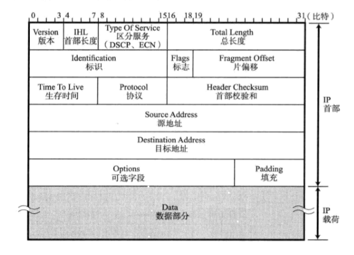
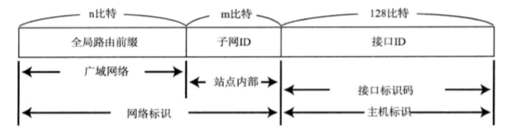
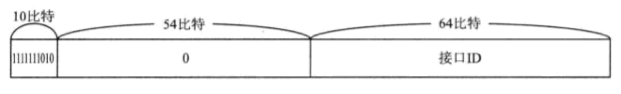
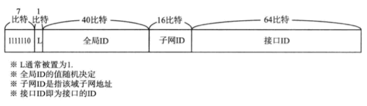
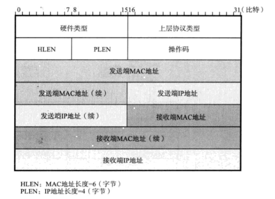

网络层的主要作用是实现终端节点之间的通信，也叫点对点通信；
IP协议
IP基础知识
IP大致分为三大作用模块，它们是IP寻址、路由以及IP分包与组包。
IP地址：
IP地址用于在连接到网络中的所有主机中识别出进行通信的目标地址。
路由控制：
路由控制是指将分组数据发送到最终目标地址的功能，一个数据包之所以能够成功地到达最终的目标地址，全靠路由控制。
多跳路由： 多跳路由是指路由器或主机在转发IP数据包时只指定下一个路由器或主机，而不是将到最终目标地址为止的所有通路全部指定出来。
Hop（跳）是指网络中的一个区间，IP数据包正是在网络中一个个跳间被转发；
路由控制表：为了将数据包发给目标主机，所有主机都维护着一张路由控制表。
该表纪录着IP数据在下一步应该发给哪个路由器，IP包根据这个路由表来传输；
路由控制算法主要有两种：距离向量算法，链路状态算法。
距离向量算法：路由器之间互换目标网络的方向及其距离的相关信息，并以这些信息来制作路由控制表。
优点是处理简单，缺点是只有距离和方向的信息，当网络构造复杂时，获取稳定的路由信息需要一定时间，并且容易发生路由循环信息。例如：RIP协议；
链路状态算法：在了解网络整体连接状态的基础上生成路由控制表。优点是即使网络复杂，每个路由器尽快同步路由信息就能保持稳定的路由信息，缺点是管理和处理信息需要高速CPU处理能力和大量的内存。例如：OSPF协议；
IP分包与组包：
不同的数据链路有个最大的区别，就是它们各自的最大传输单位MTU不同：MTU在以太网是1500字节，在FDDI是4352字节，在ATM则为9180字节。IP的上一层可能会要求传送比这些MTU更多字节的数据，为了解决这个问题，IP进行分片处理，将较大的IP包分成多个较小的IP包。分片的包到了对端目标地址以后会再被组合起来传给上一层；
路径MTU发现：
路径MTU是指从发送端到接收端主机之间不需要分片时最大MTU的大小。
首先在发送端主机发送IP数据报时将其首部的分片禁止标志位设置为1，这样途中的路由器即使遇到需要分片才能处理的大包也不会进行分片，而是将包丢弃。随后，通过一个ICMP的不可达消息将数据链路上的MTU的值发给主机；
下一次，从发送给同一个目标主机的IP数据报获得ICMP所通知的MTU值，将其设置为当前MTU。发送主机根据这个MTU对数据报进行分片处理。如此反复，直到数据报被发送到目标主机为止没有再收到ICMP，就认为最后一次的ICMP所通知的MTU位合适的MTU值。
IP面向无连接:
IP面向无连接，即在发包之前，不需要建立与对端目标地址的连接。上层如果遇到需要发送给IP的数据，会立即被压缩成IP包发送出去。
IP面向无连接：一是为了简化，面向连接处理相对复杂，管理每个连接本身也很繁琐。
二是为了提速，每次通信之前事先建立连接，会降低处理速度。需要有连接时可以委托上一层提供此项服务；
IP地址
IP地址格式，IPv4由32位正整数来表示；
10101100 00010100 00000001 00000001（2进制，计算机内部）172.20.1.1（10进制）IP地址由网络和主机两部分标识组成
192.168.128.10/2424表示从头数到第几位为止属于网络标识；网络标识主机标识区分方式（1）最初两者以分类进行区别（2）现在基本以子网掩码／网络前缀进行区别；
IP地址的分类：
IP地址分为四个类别，分别为A类、B类、C类、D类，根据IP地址中从第1位到第4位的比特列对其网络标识和主机标识进行区分；A类地址：IP地址首位以0开头，前8位是网络标识，后24位是主机标识
网络地址范围
00000000(0)->01111111(127)，其中0和127被保留，共128-2=126个网络地址；主机标识范围
00000000.00000000.00000000->11111111.11111111.11111111，其中全部为0和全部为1是保留地址，因此A类地址的一个网络地址可以分配2^24-2个主机地址；B类地址：IP地址前两位为
10的地址，前16位是网络标识，后16位是主机标识网络地址范围
10000000.00000000(128.0)->10111111.11111111(191.255)，其中128.0和191.255被保留，共2^14-2个网络地址；主机标识范围
00000000.00000000->11111111.11111111，其中全部为0和全部为1是保留地址，因此A类地址的一个网络地址可以分配2^16-2个主机地址；C类地址：IP地址前三位为
110的地址，前24位是网络标识，后8位是主机标识
网络地址范围11000000.00000000.00000000(192.0.0)->11011111.11111111.11111111(223.255.255)，其中
192.0.0和223.255.255被保留，共2^21-2个网络地址；主机标识范围
00000000->11111111，其中全部为0和全部为1是保留地址，因此C类地址的一个网络地址可以分配254个主机地址；D类地址：IP地址前四位为
1110的地址，32位都是网络标识，D类地址没有主机标识，常被用于多播；网络地址范围
224.0.0.0 -> 239.255.255.255;
在分配IP地址的主机标识时，主机地址的比特位不可以全部为0或者全部为1。
主机地址全部为0只有在表示对应的网络地址或IP地址不可获知的情况下才使用；
主机地址全部为1通常用作广播地址；
广播地址：
将IP地址的主机地址全部设置为1，就成了广播地址：
172.20.255.255/16以太网中如果将MAC地址的所有位改为1，则形成 FF:FF:FF:FF:FF:FF 的广播地址。因此，广播的IP包以数据链路的帧的形式发送时，得通过MAC 地址全为1的 FF:FF:FF:FF:FF:FF 转发；
广播分为本地广播和直接广播：
本地广播，本网络之内的广播。例如
192.168.0.0/24，广播地址192.168.0.255；直接广播，在不同网络之间的广播。例如
192.168.0.0/24向192.168.1.255/24发包；由于直接广播有一定的安全问题，多数情况下会在路由器设置为不转发。
IP多播：
多播用于将包发送给特定组内的所有主机。
多播使用D类地址，IP地址前四位为
1110可以认为是多播地址，剩下的28位可以称为多播的组编号。子网掩码:
直接使用A类、B类、C类地址很浪费资源，现在使用子网掩码的识别码将原来A类、B类、C类的主机地址部分用作子网地址，可以将原网络分为多个物理网络。子网掩码用二进制表示的话，也是32位数字，对应IP地址网络标识部分全为1，对应IP地址主机部分全为0.
123IP地址： 172.21.100.52子网掩码：255.255.255.192IP地址： 172.21.100.52 ／26
IPv4首部

版本：4位，表示IP首部的版本号；
首部长度：4位，表示IP首部的长度。单位是4字节。没有可选项的IP包，设置为5，即IP首部20字节；
区分服务：8位；
总长度：16位，表示IP首部+数据的总字节数。理论上IP包的最大长度是2^16字节；
标识：16位，用于分片重组。
同一个分片的标识相同，不同分片的标识值不同。通常，每发一个IP包，值逐渐增加；
标志：3位，表示包被分片的信息。
0位:未使用，现在必须是0；
1位：是否进行分片，0可以分片，1不能分片；
2位：包被分片的情况下，是否为最后一个包。0最后一个分片的包，1分片中段的包；
片偏移：13位，表示被分片的每一个分段相对于原始数据的位置。
生存时间：8位，表示可以中转多少个路由器，每经过一个路由器，生存时间-1，变为0时则丢弃该包；
协议：8位，表示上层协议；
首部校验和：16位，只校验数据报的首部，不校验数据部分，用来确保IP数据报不被破坏。
源地址：32位；
目标地址：32位；
可选项：长度可变，试验或诊断时使用；
填充：在有可选项的情况下，首部长度可能不是32比特的整数倍，用来填充0；
IPv6
IPv6的目的是根本解决IPv4地址耗尽的问题，同时试图改善IPv4的缺陷；
IPv6的特点：
（1）IP地址的扩大与路由控制表的聚合；
（2）性能提升：包首部长度固定为40字节，不再采用首部校验码。简化首部结构，减轻路由器负荷。
路由器不再做分片处理，通过路径MTU发现只有发送端主机进行分片；
（3）支持即插即用功能：没有DHCP服务器也可以自动分配IP地址；
（4）采用认证与加密功能：应对伪造IP地址与防止线路窃听；
（5）多播，mobile IP成为扩展功能：这两个功能在IPv4中难以应用；
IPv6的地址：
IPv6的地址长度为128位，一般写为8个16位比特，每组用冒号隔开；
12000:0:0:0:0:0:0:1->2000::1(省略表示)（1）全局单播地址：（48比特全局路由前缀+16比特子网ID）网络标识+（64比特接口ID）主机标识
接口ID可以为Mac地址的值或随机产生与Mac地址没有关系的临时地址；

（2）链路本地单播地址：
FE80::/10 链路本地单播地址是指在同一个数据链路内唯一的地址，用于不经过路由器，同一个链路内中的通信；
接口ID通常为64位的Mac地址；

（3）唯一本地地址：
FC00::/7 唯一本地地址是不进行互联网通信时所使用的地址，或通过NAT或网关与互联网通信；

IP协议相关技术
IP是让最终目标主机收到数据包，但仅有IP是无法实现通信的，还需要有解析主机名称和Mac地址的功能，以及数据包在发送过程中异常情况处理的功能。
DNS查询过程

- 在浏览器中输入www.qq.com域名，操作系统会先检查自己本地的hosts文件是否有这个网址映射关系，如果有，就先调用这个IP地址映射，完成域名解析。
- 如果hosts里没有这个域名的映射，则查找本地DNS解析器缓存，是否有这个网址映射关系，如果有，直接返回，完成域名解析。
- 如果hosts与本地DNS解析器缓存都没有相应的网址映射关系，首先会找TCP/ip参数中设置的首选DNS服务器，在此我们叫它本地DNS服务器，此服务器收到查询时，如果要查询的域名，包含在本地配置区域资源中，则返回解析结果给客户机，完成域名解析，此解析具有权威性。
- 如果要查询的域名，不由本地DNS服务器区域解析，但该服务器已缓存了此网址映射关系，则调用这个IP地址映射，完成域名解析，此解析不具有权威性。
- 如果本地DNS服务器本地区域文件与缓存解析都失效，则根据本地DNS服务器的设置（是否设置转发器）进行查询，如果未用转发模式，本地DNS就把请求发至13台根DNS，根DNS服务器收到请求后会判断这个域名(.com)是谁来授权管理，并会返回一个负责该顶级域名服务器的一个IP。本地DNS服务器收到IP信息后，将会联系负责.com域的这台服务器。这台负责.com域的服务器收到请求后，如果自己无法解析，它就会找一个管理.com域的下一级DNS服务器地址(qq.com)给本地DNS服务器。当本地DNS服务器收到这个地址后，就会找qq.com域服务器，重复上面的动作，进行查询，直至找到www.qq.com主机。
- 如果用的是转发模式，此DNS服务器就会把请求转发至上一级DNS服务器，由上一级服务器进行解析，上一级服务器如果不能解析，或找根DNS或把转请求转至上上级，以此循环。不管是本地DNS服务器用是是转发，还是根提示，最后都是把结果返回给本地DNS服务器，由此DNS服务器再返回给客户机。
ARP：查询网络设备对应的Mac地址
ARP只适用于IPv4，不能用于IPv6，IPv6可以用ICMPv6替代ARP发送邻居探索消息；
ARP的工作机制：
同一数据链路内，主机a为了获取主机b的Mac地址，需要广播发送ARP请求包；
主机收到ARP请求包，如果目标IP地址就是自己，那么就将自己的Mac地址写入ARP响应包返回；

ARP缓存表：
避免每次发IP数据都要进行ARP请求来获取Mac地址，减少网络流量。
Mac地址缓存有一定期限；
RARP：通过Mac地址获取对应的IP地址；为什么需要RARP
ICMP
ICMP主要功能包括：确认IP包是否成功送达目标地址，通知在发送过程当中IP包被废弃的具体原因，改善网络设置等；
ICMP的消息大致分为两类：一类是通知出错原因的错误消息，另一类是用于诊断的查询消息。
ICMP目标不可达消息
IP路由器无法将IP数据包发送给目标地址时，会给发送端主机返回一个目标不可达的ICMP消息，并在消息中显示不可达的具体原因。
错误号为1，主机不可达表示路由表中没有该主机的信息，或者该主机没有连接到网络；
错误号为4，用于MTU探索；
ICMP超时信息
IP包中有个字段叫做TTL，经过一次路由器-1，减到0时IP包会被丢弃，IP路由器将发送ICMP超时信息；
ICMP回送消息
用于进行通信的主机或路由器之间，判断所发送的数据包是否已经成功到达对端的一种消息。
ping命令就是基于这个消息实现的；
DHCP：自动设置IP地址，统一管理IP地址分配
DHCP工作机制：
（1）DHCP客户端发送DHCP发现包，要求设置IP地址和子网掩码；
（2）DHCP服务器通知可以使用的网络设置；
（3）DHCP客户端通知想要使用在（2）中通知的设置；
（4）DHCP服务器通知允许在（3）的设置；